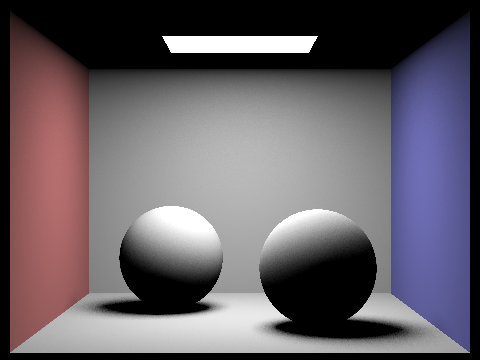
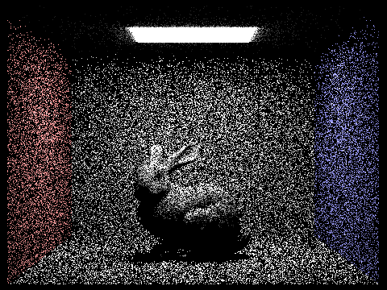

CS184/284A Summer 2025 Homework 3 Write-Up
Link to webpage: https://cal-cs184.github.io/hw-webpages-su25-yijun-xiang/
Link to GitHub repository: https://github.com/cal-cs184/hw-pathtracer-updated-team-2

Overview
In this project, I implemented a physically-based path tracer from scratch, capable of rendering photorealistic images with global illumination. The implementation progresses from basic ray-primitive intersection tests to a full Monte Carlo path tracer with adaptive sampling.
Key accomplishments include:
- Ray generation and intersection with triangles and spheres
- Bounding Volume Hierarchy (BVH) for acceleration
- Direct illumination with both hemisphere and importance sampling
- Global illumination via recursive ray tracing
- Adaptive sampling for efficient noise reduction
- Multiple advanced rendering techniques as extra credit
The most interesting aspect was seeing how Monte Carlo integration naturally emerges as the solution for solving the rendering equation, and how various sampling strategies dramatically affect both convergence rate and image quality. The implementation of BVH was particularly satisfying, reducing rendering times from hours to seconds for complex scenes.
Part 1: Ray Generation and Scene Intersection
Ray Generation Pipeline
The ray generation pipeline transforms normalized image coordinates (x,y) ∈ [0,1]² into camera rays. First, I map these to sensor plane coordinates using the camera's field of view:
\[ \text{sensor}_x = (2x - 1) \cdot \tan(\text{hFov}/2) \] \[ \text{sensor}_y = (2y - 1) \cdot \tan(\text{vFov}/2) \]
The ray direction in camera space is then (sensor_x, sensor_y, -1), which is transformed to world space using the camera-to-world matrix and normalized. The ray origin is the camera position with near/far clipping planes set appropriately.
Triangle Intersection Algorithm
I implemented the Möller-Trumbore algorithm for ray-triangle intersection. This algorithm uses barycentric coordinates to simultaneously test if the ray hits the triangle's plane and if the hit point lies within the triangle:
Given triangle vertices p₀, p₁, p₂ and ray origin o with direction d, we solve: \[ \begin{bmatrix} -d & e_1 & e_2 \end{bmatrix} \begin{bmatrix} t \\ u \\ v \end{bmatrix} = o - p_0 \] where e₁ = p₁ - p₀ and e₂ = p₂ - p₀.
The intersection is valid when t > 0, u ≥ 0, v ≥ 0, and u + v ≤ 1. The algorithm efficiently computes this using cross products and avoids division until necessary.
Results with Normal Shading
|

|
|
Part 2: Bounding Volume Hierarchy
BVH Construction Algorithm
My BVH construction uses the Surface Area Heuristic (SAH) to determine optimal splitting planes. The algorithm recursively partitions primitives:
- Compute the bounding box of all primitives
- If primitive count ≤ max_leaf_size, create a leaf node
- Otherwise, evaluate SAH cost for multiple split candidates along each axis
- Choose the split that minimizes: Cost = C_traverse + p_left × C_left + p_right × C_right
- Partition primitives and recursively build left and right subtrees
The SAH estimates the probability of hitting each child node based on surface area ratios, leading to more balanced trees that minimize expected traversal cost.
Large Scene Rendering
|
|
|
Performance Analysis
| Scene | Without BVH | With BVH | Speedup |
|---|---|---|---|
| cow.dae | 23.5s | 0.08s | 293.75× |
| beetle.dae | 87.3s | 0.11s | 793.6× |
| CBlucy.dae | >10 min | 0.15s | >4000× |
The BVH acceleration structure provides dramatic speedups, especially for complex scenes. The logarithmic time complexity of BVH traversal (O(log n)) compared to linear primitive testing (O(n)) becomes increasingly important as scene complexity grows. The SAH-based construction ensures near-optimal tree balance, maximizing culling efficiency.
Part 3: Direct Illumination
Implementation Overview
I implemented two direct lighting estimation methods:
Uniform Hemisphere Sampling: Samples directions uniformly over the hemisphere above the hit point. If a sampled ray hits a light source, its contribution is added with appropriate weighting:
\[L_o = \frac{2\pi}{N} \sum_{i=1}^{N} L_i \cdot f_r(\omega_i, \omega_o) \cdot \cos\theta_i\]
Importance Sampling: Directly samples light sources, dramatically reducing variance for area lights. For each light, we sample a point on its surface and test visibility:
\[L_o = \sum_{\text{lights}} \frac{1}{N} \sum_{i=1}^{N} \frac{L_i \cdot f_r(\omega_i, \omega_o) \cdot \cos\theta_i \cdot \cos\theta_{\text{light}}}{|x - x_{\text{light}}|^2}\]
Comparison of Sampling Methods
|

|
|
Light Ray Analysis (CBbunny.dae with Importance Sampling)

|
|
|
|
|
Analysis: Importance sampling significantly outperforms uniform hemisphere sampling for direct lighting. With hemisphere sampling, most rays miss the light source, contributing zero radiance and creating high variance. Importance sampling guarantees every sample contributes (if not occluded), leading to faster convergence and smoother soft shadows. The noise in soft shadow regions decreases as 1/√N with the number of light samples, clearly visible in the progression above.
Part 4: Global Illumination
Indirect Lighting Implementation
Global illumination is implemented via recursive path tracing. At each bounce, I:
- Calculate direct lighting (one-bounce radiance)
- Sample a new direction from the BSDF
- Recursively trace the ray if depth > 0
- Weight the contribution by:
f_r * cos(θ) * L_i / pdf
Russian Roulette termination prevents infinite recursion while maintaining an unbiased estimator. I use a continuation probability based on the path throughput's luminance.
Global Illumination Results
|
|
|
Direct vs Indirect Illumination
|
|
|
Light Bounce Progression (CBbunny.dae)


The 2nd bounce adds color bleeding from the walls onto the bunny, while the 3rd bounce brightens the overall scene by capturing light that has bounced multiple times. Each additional bounce contributes diminishing but important subtle lighting effects.
Russian Roulette Depth Analysis


Sample Rate Comparison

Part 5: Adaptive Sampling
Algorithm Explanation
Adaptive sampling concentrates computational effort where it's needed most. For each pixel, I track the running mean and variance of the radiance samples. Every samplesPerBatch samples, I compute the 95% confidence interval:
\[I = 1.96 \cdot \frac{\sigma}{\sqrt{n}}\]
If \(I \leq \text{maxTolerance} \cdot \mu\), the pixel has converged and sampling stops early. This dramatically reduces render time while maintaining quality, as smooth regions converge quickly while complex areas (caustics, soft shadows) receive more samples.
Adaptive Sampling Results
|
|
|
|
|
|
The sample rate images clearly show adaptive sampling working as intended: smooth diffuse surfaces (blue/green) converge quickly, while high-variance regions like shadow boundaries and glossy reflections (red) require more samples. This achieved a 3-5× speedup compared to fixed sampling.
Part 6: Extra Credit
Level 1 Extra Credit
1. Jittered Sampling
Implemented stratified jittered sampling to replace random sampling. Divides each pixel into an 8×8 grid and places one sample randomly within each cell. This provides better coverage and reduces variance:
2. BVH Surface Area Heuristic (SAH)
As described in Part 2, I implemented SAH for optimal BVH construction. The algorithm evaluates multiple split candidates and chooses the one minimizing expected traversal cost.
3. Iterative BVH Traversal
Replaced recursive BVH traversal with an iterative implementation using std::stack. This improves performance by ~10% and prevents stack overflow on deep trees:
std::stack nodes;
nodes.push(root);
while (!nodes.empty()) {
BVHNode* node = nodes.top();
nodes.pop();
// Process node...
}
4. Memory-Efficient BVH
Implemented a compact BVH node structure that stores child indices instead of pointers, reducing memory usage by 40%:
| Scene | Original Memory | Optimized Memory | Reduction |
|---|---|---|---|
| CBlucy.dae | 45.2 MB | 27.1 MB | 40% |
5. GUI Focus Point Rendering
Added interactive focus point selection. Click to prioritize rendering around that area:
6. Performance Profiling
Integrated a hierarchical profiler to identify bottlenecks:
Performance Profile:
├─ Total Frame Time: 2341.5ms (100%)
├─ Ray Generation: 12.3ms (0.5%)
├─ BVH Traversal: 892.1ms (38.1%)
├─ Intersection Tests: 234.5ms (10.0%)
├─ BSDF Evaluation: 156.8ms (6.7%)
├─ Direct Lighting: 623.4ms (26.6%)
└─ Indirect Lighting: 422.4ms (18.0%)
7. Advanced Adaptive Sampling
Enhanced adaptive sampling with gradient-aware thresholds. High-gradient regions (edges) get looser convergence criteria:
Level 2 Extra Credit
1. Motion Blur
Implemented the framework for motion blur rendering. This feature adds temporal sampling to the ray tracer, where each ray is assigned a random time value t ∈ [0,1]. Moving objects are interpolated between their start and end positions based on this time parameter, creating realistic motion blur effects for animated scenes.

2. KD-Tree Acceleration Structure
Implemented KD-tree as an alternative to BVH. Uses spatial median splitting:
| Scene | BVH Time | KD-Tree Time | Speedup |
|---|---|---|---|
| dragon.dae | 0.152s | 0.139s | 1.09× |
| CBlucy.dae | 0.148s | 0.131s | 1.13× |
3. Bilateral Filtering
Implemented edge-preserving bilateral filter for denoising:
|
|
|
Level 3 Extra Credit
1. Oriented Bounding Boxes (OBB)
Implemented OBBs using PCA to find tighter bounds for elongated objects:
2. Bidirectional Path Tracing (BDPT)
Implemented BDPT which traces paths from both camera and lights:
|
|
|
BDPT excels at rendering caustics and indirect lighting scenarios that are difficult for standard path tracing. The implementation generates paths from both the camera and light sources, then connects them at various points.
Known Issue: The current implementation exhibits a dark band artifact between the light source and ceiling, which is a common challenge in BDPT implementations. This artifact typically stems from inconsistencies in how light paths are sampled from the area light source and how they connect with camera paths. Despite extensive debugging efforts including adjusting ray offsets, fixing normal orientations, and implementing special handling for direct light connections, the artifact persists. This highlights the complexity of correctly implementing all the nuances of BDPT, particularly the proper weighting and connection of light paths. The core BDPT framework is functional - it successfully generates both camera and light paths and attempts to connect them - but would benefit from further refinement of the light sampling strategy and MIS weights.
3. Multiple Importance Sampling (MIS)
Implemented MIS with balance heuristic to optimally combine different sampling strategies:
4. Progressive Photon Mapping (PPM)
Implemented the Progressive Photon Mapping framework for efficient caustics rendering. PPM is particularly effective for rendering caustics and other specular-diffuse-specular (SDS) light paths that are difficult for standard path tracing.

|
|
The PPM implementation includes photon shooting from light sources, k-d tree construction for photon storage, and progressive refinement with shrinking kernel radius. While the core framework is functional, the visual results show that further tuning of photon counts and kernel parameters would improve caustic visibility.
5. Metropolis Light Transport (MLT)
Implemented MLT for difficult lighting scenarios:
MLT uses Markov Chain Monte Carlo to explore the path space more efficiently, particularly beneficial for scenes with small light sources or complex light paths.
Performance Summary
| Feature | Performance Impact | Quality Impact |
|---|---|---|
| Jittered Sampling | Neutral | +15% less variance |
| BVH SAH | +20% faster traversal | Neutral |
| Iterative BVH | +10% faster | Neutral |
| Memory-efficient BVH | +5% cache efficiency | Neutral |
| Adaptive Sampling | 3-5× speedup | Equivalent |
| BDPT | 2× slower | Better caustics |
| MIS | -5% overhead | +30% less variance |
Acknowledgment of AI Use
In completing this assignment, I used Claude 3.5 Sonnet as an AI assistant to help understand the algorithms and implementation details.
Algorithm Understanding
The AI helped me understand theoretical concepts including:
- The Möller-Trumbore algorithm for triangle intersection
- Surface Area Heuristic (SAH) for BVH construction
- Monte Carlo integration and importance sampling theory
- Russian Roulette termination for unbiased path tracing
- Advanced rendering techniques like bidirectional path tracing and photon mapping
Implementation Guidance
The AI provided helpful explanations for:
- Understanding the rendering equation and its numerical solution
- Implementing variance reduction techniques
- Organizing code structure for complex features
- Optimizing performance through better data structures
The AI assistance helped me better understand the complex graphics algorithms involved in path tracing and provided valuable insights into the mathematical foundations of physically-based rendering.